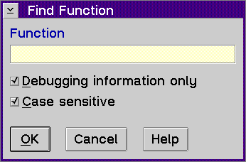

Displays the Find Function window, which allows you to open a source window to a particular function.
To use the Find Function window:
If the function that you specify is not found, the following message displays:
NO MATCHING FUNCTION FOUND
This means it may be a static function or the function you specified does not exist.
The debugger searches each object file for global functions that match the
function name specified. If an object file contains the global function
that was specified, then it will also search that file for any static function
with the same name.